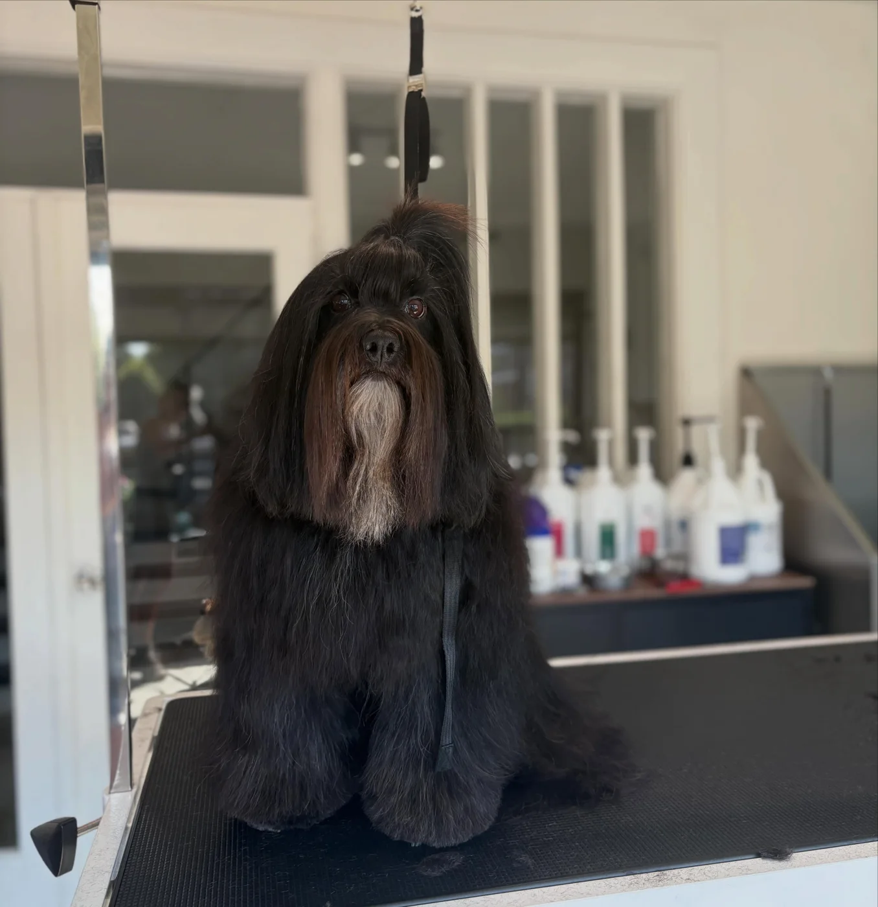
BasisWassen en drogen
Wassen met professionele shampoo en volledig drogen. Tijdens het drogen borstelen we meteen alle klitten uit.
Op afspraak Elke vacht
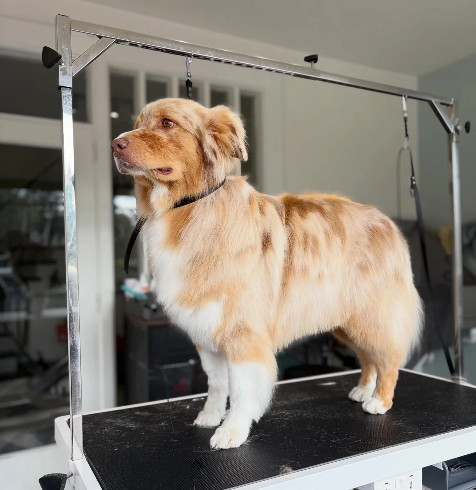
Wassen, knippen, scheren of plukken, altijd volgens de vacht van je hond en jouw wensen. Jolien forceert nooit maar bouwt eerst een band op met je hond. De rest komt vanzelf.
Van een grondige wasbeurt tot een volledige snit. Heb je een foto van hoe je hem graag ziet? Breng ze gerust mee.

BasisWassen met professionele shampoo en volledig drogen. Tijdens het drogen borstelen we meteen alle klitten uit.
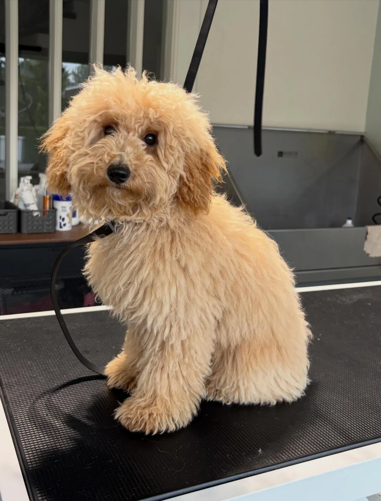
Snit naar wensGeknipt of geschoren zoals jij het graag ziet, altijd met oog voor de vachtstructuur van je hond.
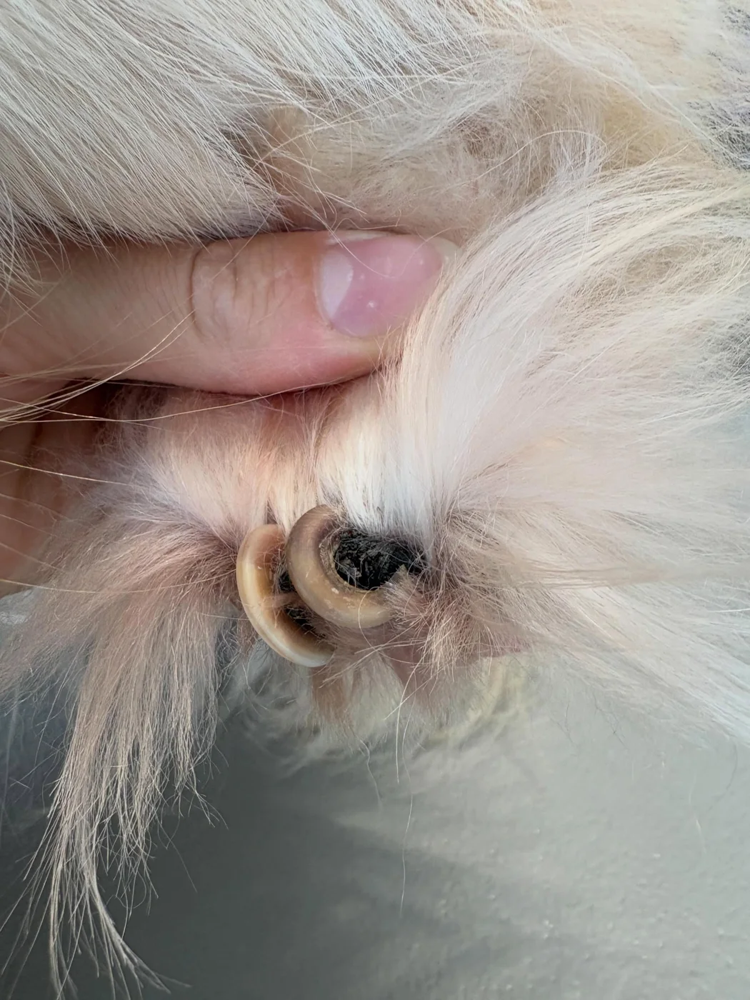
Snel tussendoorZijn de nagels van je hond te lang? Bel even en kom snel langs. Je bent altijd welkom.
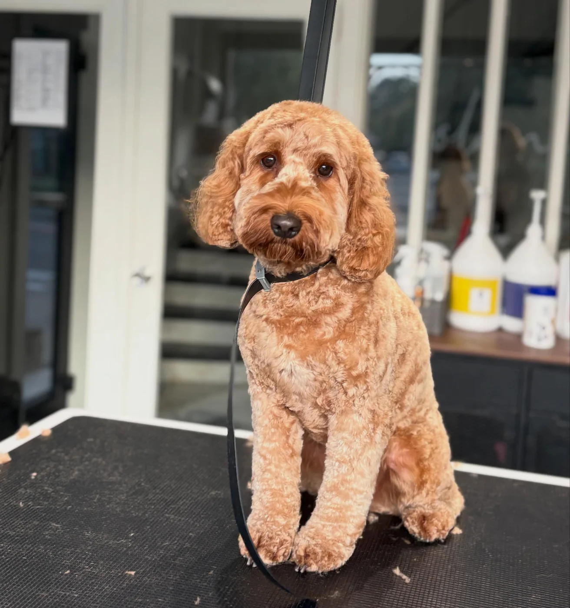
Voor pupsZo leert je pup het trimsalon kennen zonder stress. In drie rustige stappen naar de eerste echte snit.
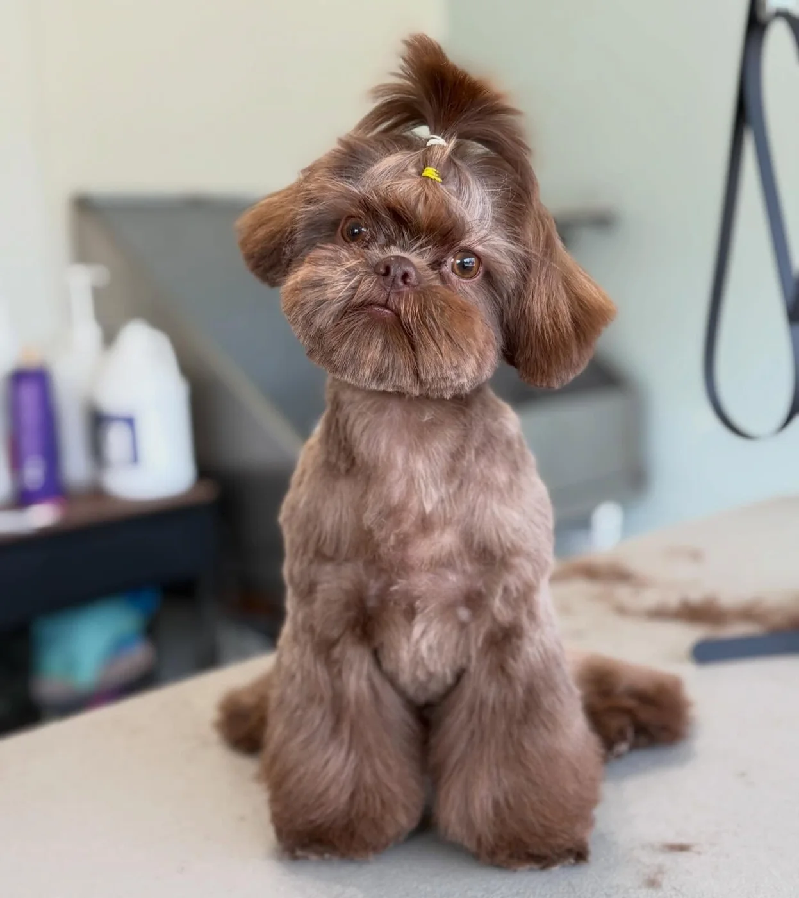
Vreemde geluiden, een vreemde plek en een vreemd persoon. Dat is veel voor een pup. Daarom laten we hem stap voor stap wennen.
Je pup wordt geborsteld, de pootjes worden even nat gemaakt en gedroogd, nageltjes geknipt en oogjes proper gemaakt. Jij krijgt veel tips over de vachtverzorging.
Nu zonder baasje, tenzij je pup dat echt nodig heeft. Volledig wassen, drogen en borstelen, en het haar tussen de kussentjes wegknippen.
Samen bespreken we hoe je pup geknipt wordt. Een foto van wat je mooi vindt helpt altijd.
Als klein meisje mocht ik altijd mee met onze maltezer naar de hondenkapper, en dan filmde ik de volledige trimbeurt. Die passie bleef. Na mijn opleiding begon ik met mijn eerste hondjes in de garage van mijn mama, 19 jaar oud en met heel veel goesting.
Sinds 2016 ben ik professioneel hondenkapper, en ik blijf me bijscholen via opleidingen en workshops. Wat nooit verandert: een positieve ervaring voor je hond komt op de eerste plaats.
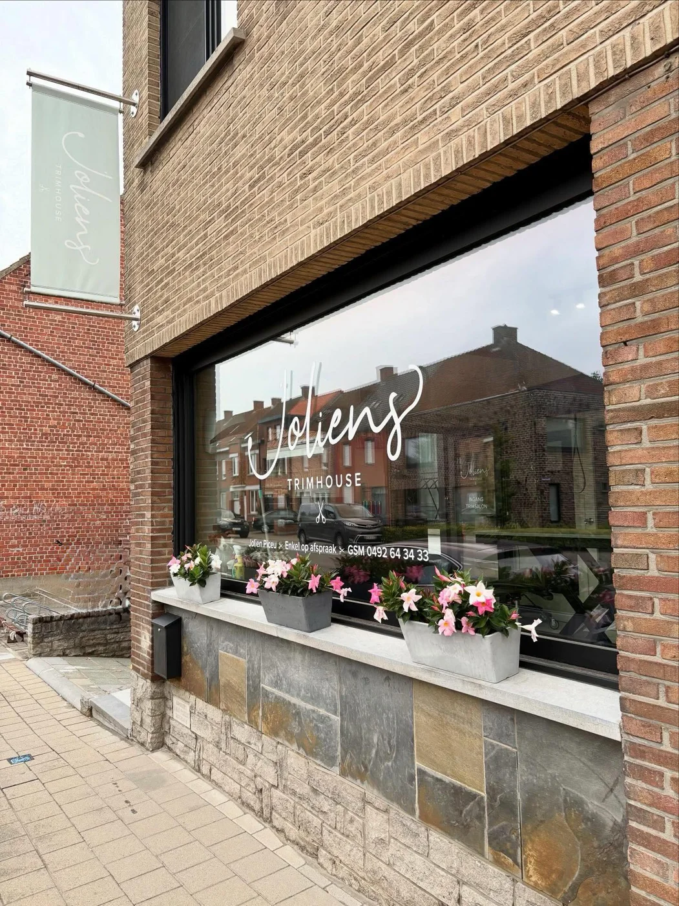
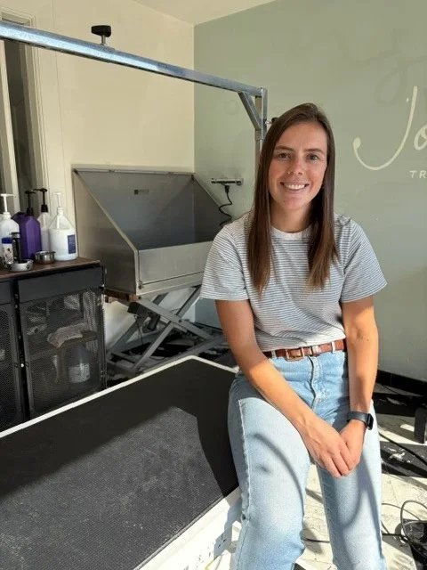
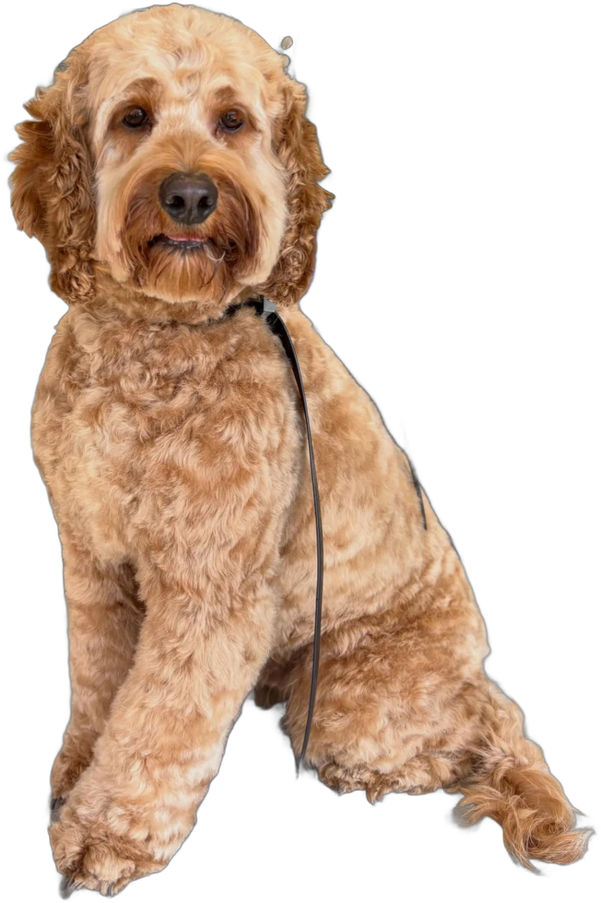
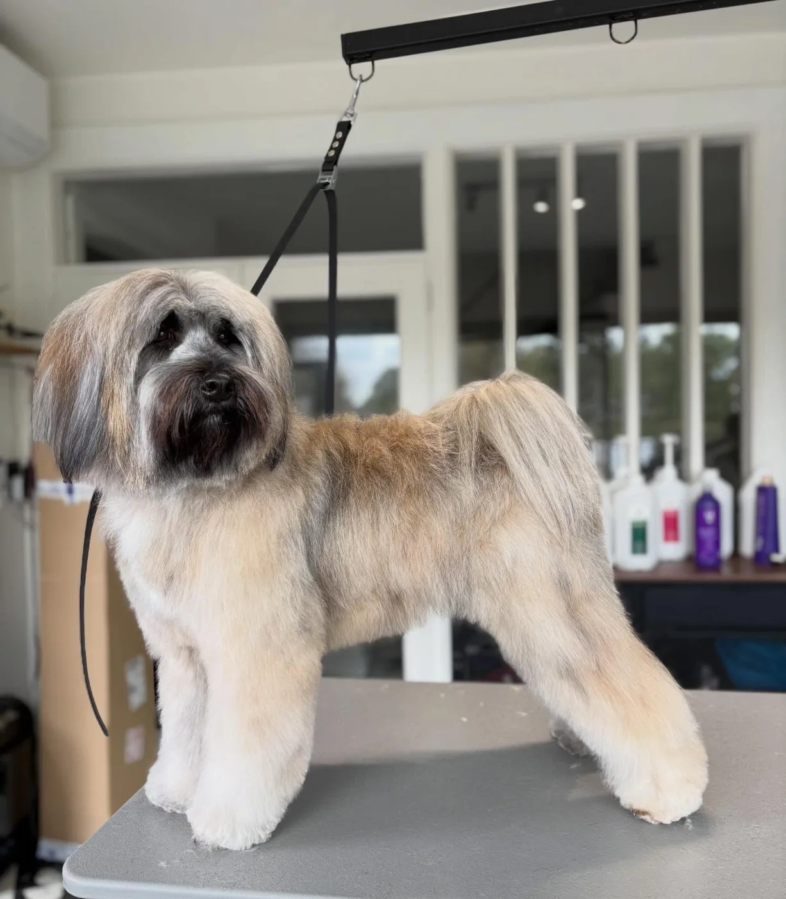
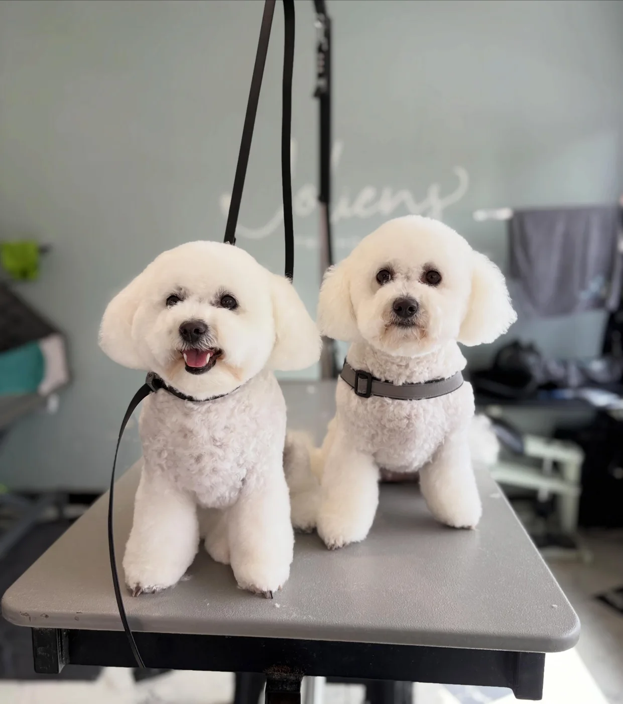
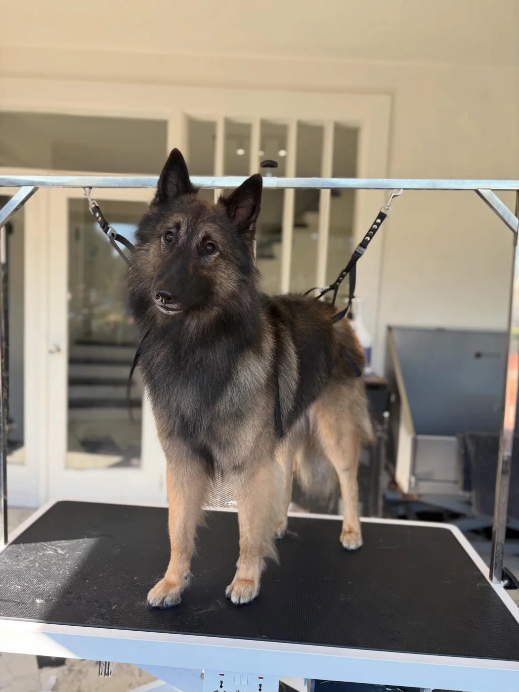
"Ons Droopy is een bange husky van 6j en het was haar eerste keer en Jolien stelde haar direct op haar gemakje. Ook mocht ik bij haar blijven wat niet altijd evident is te vinden."
"Reeds jaren klant! Geen enkele trimmer weet mijn hond te verzorgen en knippen zoals Jolien. Ik beveel haar warm aan. Grote kennis van haar metier en producten. Top plaats !"
"Heel tevreden hoe Jolien ons dwergpoedelpupje Pippa voor de eerste keer ontving, na de verzorging een zalig zacht hondje terug gekregen. Ze gaf ons ook duidelijke info hoe we een mooie poedelvacht krijgen en behouden."
Je boekt eenvoudig online, of je belt even. Het trimsalon werkt enkel op afspraak, met een strak tijdschema. Zo heeft elke hond de rust en tijd die hij verdient.
Ik maakte deze demo voor jullie om te tonen wat er kan. Na een kort gesprek maak ik er iets veel persoonlijkers van, helemaal naar jullie wens.
Vrijblijvend. Ik kom langs of we bellen.
Op maat, op jullie eigen domein.
Geen voorschot. Jullie betalen pas als alles klaar is.
Hosting, domeinnaam en kleine wijzigingen, zoals nieuwe openingsuren.
Omdat een voorbeeld meer zegt dan een mail. Zo zien jullie meteen wat er kan, en het kost jullie niets.
Nee. Het gesprek is vrijblijvend. Vinden jullie het niks, dan is het daarmee gedaan.
Na ons gesprek staat jullie site binnen 10 tot 14 dagen online.
Zeker. Jullie domeinnaam kan gewoon blijven, de nieuwe site komt in de plaats van de oude.
Nee, dat doe ik op basis van ons gesprek. Eigen foto's zijn mooi meegenomen, maar niet nodig om te starten.